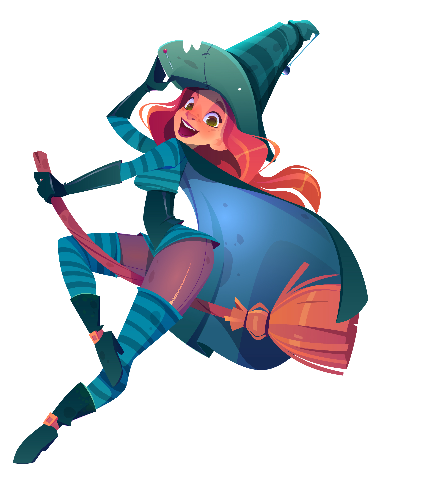

« — Лисёнок, — сказал лисёнок лисёнку, — ты помни, пожалуйста, что если тебе тяжело, плохо, грустно, страшно, если ты устал — ты просто протяни лапу. И я протяну тебе свою, где бы ты ни был, даже если там — другие звёзды или все ходят на головах. Потому что печаль одного лисёнка, разделенная на двух лисят — это ведь совсем не страшно. А когда тебя держит за лапу другая лапа — какая разница, что там ещё есть в мире?»
Who am I anyway?

Наверное, в этом разделе стоит написать парочку слов о великой и неповторимой мне и рассказать, почему же я называю себя ведьмочкой. Что ж, скажу, что я любительница вкусного чая, дождливых деньков и котов. Да, для последних из этого списка я не стала давать уточняющего определения, так как люблю абсолютно всех представителей кошачьей расы. К слову, вы знали, что у пушистиков есть своя религия? Нет? Тогда ищите ее на страницах сего блога. А что касается моего прозвища: это "имя" привязалось ко мне еще со школы. Забавные были времена, эх. Кстати, в школе мы и познакомились с моей лучшей подругой, именуемой чертиком.